토목기사 (2011-06-12 기출문제)
1과목: 응용역학
1. 그림과 같은 부정정보에 집중하중이 작용할 때 A점의 휨 모멘트 MA를 구한 값은?
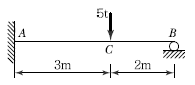
- －5.7t ∙ m
- －3.6t ∙ m
- －4.2t ∙ m
- －2.6t ∙ m
(정답률: 60%)

2. 다음 라멘의 부정정의 차수는?
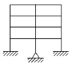
- 23차 부정정
- 28차 부정정
- 32차 부정정
- 36차 부정정
(정답률: 71%)
3. 주어진 T형보 단면의 캔틸레버에서 최대 전단응력을 구하면 얼마인가? (단, T형보 단면의 IN.A.＝86.8cm4이다.)
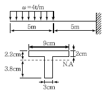
- 1,256.8kg/cm2
- 1,663.6kg/cm2
- 2,079.5kg/cm2
- 2,433.2kg/cm2
(정답률: 73%)
4. 직경 D인 원형 단면의 단면 계수는?
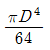
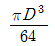
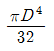
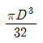
(정답률: 73%)
5. 다음 그림과 같이 강선 A와 B가 서로 평행상태를 이루고 있다. 이때 각도 θ의 값은?
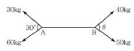
- 47.2°
- 32.6°
- 28.4°
- 17.8°
(정답률: 70%)
6. 반지름이 30cm인 원형단면을 가지는 단주에서 핵의 면적은 약 얼마인가?
- 177cm2
- 228cm2
- 283cm2
- 353cm2
(정답률: 74%)
7. 다음 그림과 같은 양단 고정보에서 중앙점의 최대 처짐은?
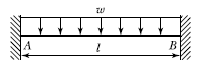
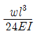
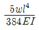
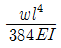
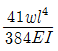
(정답률: 48%)
8. 그림의 수평부재 AB는 A지점은 힌지로 지지되고 B점에는 집중하중 Q가 작용하고 있다. C점과 D점에서는 끝단이 힌지로 지지된 길이가 L이고, 휨 강성이 모두 EI로 일정한 기둥으로 지지되고 있다. 두 기둥의 좌굴에 의해서 붕괴를 일으키는 하중 Q의 크기는?
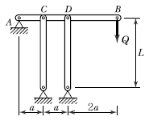
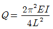
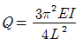
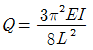
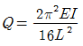
(정답률: 67%)
9. 그림과 같은 보에서 다음 중 휨모멘트의 절대값이 가장 큰 곳은?
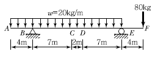
- B점
- C점
- D점
- E점
(정답률: 70%)
10. 그림과 같은 라멘의 A점의 휨모멘트로서 옳은 것은?
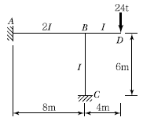
- 28.8t ∙ m
- －28.8t ∙ m
- 57.6t ∙ m
- －57.6t ∙ m
(정답률: 52%)
11. 지름 20mm, 길이 1m인 강봉을 4t의 힘으로 인장할 경우 이 강봉의 변형량은?(단, 이 강봉의 탄성계수는 E=2.0 ×106kg/cm2이다.)
- 0.908mm
- 0.808mm
- 0.737mm
- 0.637mm
(정답률: 54%)
12. 그림과 같이 이축응력(二軸應力)을 받는 정사각형 요소의 체적변형률은?(단, 이 요소의 탄성계수 E = 2.0 ×106kg/cm2, 푸아송비v = 0.3이다.)
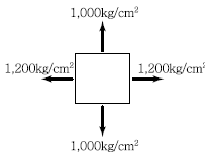
- 3.6×10-4
- 4.4×10-4
- 5.2×10-4
- 6.4×10-4
(정답률: 79%)
13. 다음 부정정보의 b단이 l*만큼 아래로 처졌다면 a단에 생기는 모멘트는? (단, l*/l＝1/600이다.)
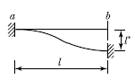
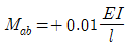
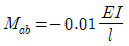
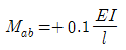
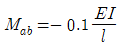
(정답률: 58%)
14. 그림과 같은 3경간 연속보의 B점이 5cm 아래로 침하하고 C점이 3cm 위로 상승하는 변위를 각각 보였을 때 B점의 휨모멘트 MB를 구한 값은? (단, EI= 8 ×1010kg ㆍ cm2로 일정)
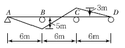
- 3.52×106kg ㆍ m2
- 4.85×106kg ㆍ m2
- 5.07×106kg ㆍ m2
- 5.60×106kg ㆍ m2
(정답률: 46%)
15. 다음과 같은 부재에서 AC사이의 전체 길이의 변화량 δ는 얼마인가? (단, 보는 균일하며 단면적 A와 탄성계수 E는 일정하다고 가정한다.)
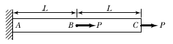
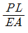
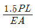
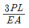
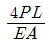
(정답률: 61%)
16. 반지름이 r인 중실축(中實軸)과 바깥 반지름이 r이고 안쪽 반지름이 0.6r인 중공축(中空軸)이 동일 크기의 비틀림 모멘트를 받고 있다면 중실축(中實軸)：중공축(中空軸)의 최대 전단응력비는?
- 1：1.28
- 1：1.24
- 1：1.20
- 1：1.15
(정답률: 89%)
17. 그림과 같이 각 점이 힌지로 연결된 구조물에서 부재 CD의 부재력은?
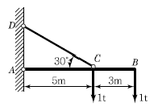
- 3t(압축)
- 3t(인장)
- 5.2t(압축)
- 5.2t(인장)
(정답률: 54%)
18. 다음 그림과 같은 r＝4m인 3힌지 원호아치에서 지점 A에서 1m 떨어진 E점의 휨모멘트는 약 얼마인가? (단, EI는 일정하다.)
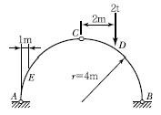
- －0.823t ∙ m
- －1.322t ∙ m
- －1.661t ∙ m
- －2.00t ∙ m
(정답률: 62%)
19. 그림(a)와 같은 하중이 그 진행방향을 바꾸지 아니하고, 그림(b)와 같은 단순보 위를 통과할 때, 이 보에 절대 최대 휨 모멘트를 일어나게 하는 하중 9t의 위치는? (단, B지점으로부터 거리임)
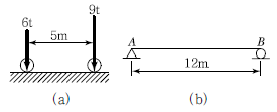
- 2m
- 5m
- 6m
- 7m
(정답률: 72%)
20. 그림과 같은 외팔보에서 A점의 처짐은? (단, AC구간의 단면이차모멘트는 I이고 CB구간 은 2I이며, 탄성계수는 E로서 전 구간이 동일하다.)
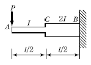
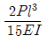
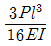
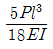
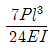
(정답률: 57%)
2과목: 측량학
21. 그림은 기복변위식을 유도하기 위한 도식을 나타낸 것이다. △r과 △r의 관계식으로 바른 것은?
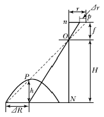
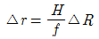
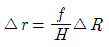
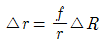
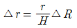
(정답률: 66%)
22. 시가지에서 5개의 측점으로 폐합트래버스를 구성하여 내각을 측정한 결과 각 관측 오차가 30ʺ0이었다. 각 관측의 경중률이 동일할 때 각 오차의 처리방법은?
- 재측량한다.
- 각의 크기에 관계없이 등배분한다.
- 각의 크기에 비례하여 등배분한다.
- 각의 크기에 반비례하여 등배분한다.
(정답률: 66%)
23. 도로공사에서 거리 20m인 성토구간의 시작단면 A1＝72m2, 끝단면 A2＝182m2, 중앙단면 Am＝132m2이라고 할 때에 각주공식에 의한 성토량은?
- 2,540.0m3
- 2,573.3m3
- 2,600.0m3
- 2,606.7m3
(정답률: 68%)
24. 축척1：50,000의 지형도상의 인접한 두 주곡선간의 도상 수평거리가 1cm이었다. 두 지점 간의 경사는 얼마인가?
- 4%
- 5%
- 6%
- 10%
(정답률: 57%)
25. 축척 1：25,000 지형도상에서 거리가 6.73cm인 두 점 사이의 거리를 다른 축척의 지형도에서 측정한 결과 11.21cm이었다면 이 지형도의 축척은 약 얼마인가?
- 1：20,000
- 1：18,000
- 1：15,000
- 1：13,000
(정답률: 62%)
26. 수평각 관측법 중 트래버스 측량과 같이 한 측점에서 1개의 각을 높은 정밀도로 측정할 때 사용하며, 시준할 때의 오차를 줄일 수 있고 최소 눈금 미만의 정밀한 관측값을 얻을 수 있는 것은?
- 단측법
- 배각법
- 방향각법
- 조합각 관측법
(정답률: 48%)
27. 그림과 같은 4변형 삼각망에서 조건식의 총수(k1), 각 조건식의 수(k2), 변조건식의 수(k3)로 옳은 것은?
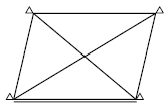
- k1＝8, k2＝4, k3＝4
- k1＝8, k2＝2, k3＝6
- k1＝4, k2＝3, k3＝1
- k1＝4, k2＝2, k3＝2
(정답률: 46%)
28. 다음과 같은 복곡선에서 t1+ t2의 값은?
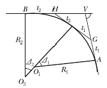
- R1(tan⊿1 + tan⊿2)
- R2(tan⊿1 + tan⊿2)
- R1tan ⊿1+ R2tan⊿2
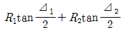
(정답률: 78%)
29. 삼각측량의 주된 목적은 무엇인가?
- 삼각점의 위치결정
- 변장의 산출
- 삼각형의 면적 결정
- 각 관측 오차 점검
(정답률: 68%)
30. 4회 관측하여 최확값을 얻었다. 최확값의 정확도를 2배 높이려면 몇 회 관측하여야 하는가?
- 32회
- 16회
- 8회
- 2회
(정답률: 65%)
31. 하천측량에서 평면측량의 일반적인 측량 범위로 가장 적합한 것은?
- 유제부에서 제외지를 제외한 제내지 300m 이내, 무제부에서는 홍수가 영향을 주는 구역보다 약간 좁게 한다.
- 유제부에서 제외지 및 제내지 300m 이내, 무제부에서는 홍수가 영향을 주는 구역보다 약간 넓게 한다.
- 유제부에서 제외지를 제외한 제내지 20m 이내, 무제부에서는 홍수가 영향을 주는 구역보다 약 간 좁게 한다.
- 유제부에서 제외지 및 제내지 20m 이내 무제부에서는 홍수가 영향을 주는 구역보다 약간 넓게 한다.
(정답률: 70%)
32. 한 변의 길이가 10m인 정방형 토지를 축척 1:600 도상에서 측정한 결과, 도상의 변측점 오차가 0.2mm발생하였다. 이때 실제 면적의 면적 측정오차는 몇 %가 발생하는가?
- 1.2%
- 2.4%
- 4.8%
- 6.0%
(정답률: 59%)
33. 노선측량에 대한 다음의 용어 설명 중 옳지 않은것은?
- 교점－방향이 변하는 두 직선이 교차하는 점
- 중심말뚝－노선의 시점, 종점 및 교점에 설치하는 말뚝
- 복심곡선－반경이 서로 다른 두 개 또는 그 이상의 원호가 연결된 곡선으로 공통접선의 같은 쪽에 원호의 중심이 있는 곡선
- 완화곡선－고속으로 이동하는 차량이 직선부에서 곡선부로 진입할 때 차량의 격동을 완화하기 위해 직선과 원호 사이에 설치하는 곡선
(정답률: 70%)
34. 축척 1：1,000으로 평판측량을 할 때 도상에서 제도의 허용오차가 0.3mm라면, 중심맞추기 오차(편심거리)는 몇 cm까지 허용할 수 있는가?
- 5cm
- 10cm
- 15cm
- 20cm
(정답률: 65%)
35. 촬영고도 3,000m로부터 초점거리 15cm의 카메라로 촬영한 중복도 60%의 2장의 사진이 있다. 각각의 사진에서 주점 기선장을 측정한 결과 124mm와 132mm이었다면 비고 60m의 굴뚝의 시차 차는?
- 1.8mm
- 2.0mm
- 2.4mm
- 2.6mm
(정답률: 45%)
36. 측량에 있어 미지값을 관측할 경우에 나타나는 오차와 관련된 다음의 설명 중 틀린 것은?
- 경중률은 분산에 반비례한다.
- 경중률은 반복 관측일 경우 각 관측값 간의 편차를 의미한다.
- 큰 오차가 생길 확률은 작은 오차가 생길 확률보다 매우 작다.
- 표준편차는 각과 거리와 같은 1차원의 경우에 대한 정밀도의 척도이다.
(정답률: 45%)
37. 완화곡선 중 클로소이드에 대한 설명으로 틀린 것은?
- 클로소이드는 나선의 일종이다.
- 매개변수를 바꾸면 다른 무수한 클로소이드를 만들 수 있다.
- 모든 클로소이드는 닮은꼴이다.
- 클로소이드 요소는 모두 길이의 단위를 갖는다.
(정답률: 76%)
38. 레벨로부터 60m 떨어진 표척을 시준한 값이 1.258m이며 이때 기포가 1눈금 편위되어 있었다. 이것을 바로 잡고 다시 시준하여 1.267m를 읽었다면 기포의 감도는?
- 약 25ʺ
- 약 27ʺ
- 약 29ʺ
- 약 31ʺ
(정답률: 45%)
39. 수준측량에서 레벨의 조정이 불완전하여 시준선이 기포관 축과 평행하지 않을 때 생기는 오차의 소거방법으로 옳은 것은?
- 정위, 반위로 측정하여 평균한다.
- 시작점과 종점에서의 표척은 같은 것을 사용한다.
- 전시와 후시의 시준거리를 같게 한다.
- 지반이 견고한 곳에 표척을 세운다.
(정답률: 72%)
40. 지구 표면의 거리 100km까지를 평면으로 간주했다면 허용정밀도는 약 얼마인가? (단, 지구의 반경은 6,370km이다.)
- 1/50,000
- 1/100,000
- 1/500,000
- 1/1,000,000
(정답률: 65%)
3과목: 수리학 및 수문학
41. 길이 a, 높이 b인 용기에 물이 h의 높이로 채워져 있다. 이 용기가 수평방향으로 α의 가속도로 운동하기 때문에 그림과 같이 수면이 경사져서 물이 넘치려고 한다면 이때의 가속도 α는?
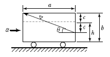
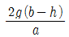
(정답률: 47%)
42. 다음 중 점성계수( μ)의 차원으로 옳은 것은?
- [ML-1T-1]
- [L2T-1]
- [LMT-2]
- [L-3M]
(정답률: 50%)
43. 그림과 같이 A에서 분기했다가 B에서 다시 합류하는 관수로에 물이 흐를 때 관 Ⅰ과 Ⅱ의 손실 수두에 대한 설명으로 옳은 것은? (단, 관의 성질은 같고, 관 Ⅰ의 직경 ＜ 관 Ⅱ의 직경이다.)
- 관 I의 손실수두가 크다.
- 관 II의 손실수두가 크다.
- 관 I과 관 Ⅱ의 손실수두는 같다.
- 관 I과 관 Ⅱ의 손실수두 합은 0이다.
(정답률: 62%)
44. 다음 중 누가우량곡선(Rainfall Mass Curve)의 특성으로 옳은 것은?
- 누가우량곡선은 자기우량기록에 의하여 작성하는 것보다 보통우량계의 기록에 의하여 작성하는 것이 더 정확하다.
- 누가우량곡선으로부터 일정기간 내의 강우량을 산출하는 것은 불가능하다.
- 누가우량곡선의 경사는 지역에 관계없이 일정하다.
- 누가우량곡선의 경사가 클수록 강우강도가 크다.
(정답률: 67%)
45. 그림과 같은 유출구에서 약간 떨어져 설치한 원추형 콘을 유지시키는 데 필요한 힘 P는? (단, 콘의 무게는 무시한다.)
- 6.92kg
- 5.21kg
- 4.34kg
- 3.46kg
(정답률: 23%)
46. 기준면에서 위로 5m 떨어진 곳에서 5m/sec로 물이 흐르고 있을 때 압력을 측정하였더니 0.5kg/cm2이었다. 이때 전수두(Total Head)는?
- 6.28m
- 8.00m
- 10.00m
- 11.28m
(정답률: 47%)
47. 어떤 유역 내의 총강수량을 P, 지표수 유입량을 I , 지표수 유출량을 O, 지하수 유출입량을 U,유역 내 저류량의 변화량을 S라 할 때 물수지 원리에 의한 증발량 E를 구하는 방정식으로 옳은 것은?
- E=P-I±U+O±S
- E=P+I-U-O+S
- E=P+I±U-O±S
- E=P+I+U+O-S
(정답률: 62%)
48. 지름 20cm, 길이 100m의 주철관으로서 매초0.1m3의 물을 40m의 높이까지 양수하려고 한다. 펌프의 효율이 100%라 할 때, 필요한 펌프의 동력은? (단, 마찰손실계수는 0.03, 유출 및 유입손실계수는 각각 1.0과 0.5이다.)
- 40HP
- 65HP
- 75HP
- 85HP
(정답률: 50%)
49. 유량 45m3/sec이 흐르는 직사각형 수로에서 수면경사가 0.001인 조건에서 가장 유리한 단면이 되기 위한 수로폭의 크기는? (단, Manning의 조도계수 n =0.035이다.)
- 8.66m
- 8.28m
- 7.94m
- 7.48m
(정답률: 47%)
50. 액체가 흐르고 있을 경우 어느 한 단면에 있어서 유속이 빠른 부분은 느린 부분의 물 입자를 앞으로 끌어당기려 하고 유속이 느린 부분은 빠른 부분의 물 입자를 뒤로 잡아당기는 듯한 작용을 한다. 이러한 유체의 성질을 무엇이라 하는가?
- 점성
- 탄성
- 압축성
- 유동성
(정답률: 68%)
51. 오리피스(Orifice)에서의 유량 Q를 계산할 때 수두 H의 측정에 1%의 오차가 있으면 유량계산의 결과에는 얼마의 오차가 생기는가?
- 0.1%
- 0.5%
- 1%
- 2%
(정답률: 66%)
52. 지속기간이 2hr인 어느 단위도의 기저시간이 10hr 이다. 강우강도가 각각 2.0, 3.0 및 5.0 [cm/hr]이고 강우지속기간은 똑같이 모두 2hr인 3개의 유효강우가 연속해서 내릴 경우 이로 인한 직접유출수문곡선의 기저시간은 얼마인가?
- 2hr
- 10hr
- 14hr
- 16hr
(정답률: 53%)
53. 다음의 강수에 관한 설명 중 틀린 것은?
- 강수는 구름이 응축되어 지상으로 강하하는 모든 형태의 수분을 총칭한다.
- 일우량(24hr 우량)이 0.1mm 이하일 경우에는 무강우로 취급한다.
- 누가우량곡선은 자기우량계에 의해 측정된 누가강우의 시간적 변화를 기록한 곡선이다.
- 이중 누가우량 분석법은 강수량 자료의 결측치를 보완하는 방법이다.
(정답률: 57%)
54. 마찰손실계수(f)와 Reynolds 수(Re) 및 상대조도(ɛ/d)의 관계를 나타낸 Moody 도표에 대한 설명으로 옳지 않은 것은?
- 층류와 난류의 물리적 상이점은 f－Re관계가 한계 Reynolds 수 부근에서 갑자기 변한다.
- 층류영역에서는 단일 직선이 관의 조도에 관계 없이 적용된다.
- 난류영역에서는 f－Re곡선은 상대조도(ɛ/d)에 따라 변하며 Reynolds 수보다는 관의 조도가 더 중요한 변수가 된다.
- 완전 난류의 완전히 거친 영역에서 f는 Ren과 반비례하는 관계를 보인다.
(정답률: 41%)
55. 그림과 같은 수조에서 깊이 h인 점에 작은 구멍을 뚫어서 물을 유출시킬 때 에너지 손실을 무시한다면 유출속도는?
- √2gh
- √gh
- 2gh
- gh
(정답률: 71%)
56. 다음 중 침투능을 추정하는 방법은?
- N－day법
- φ－index법
- DAD 해석법
- Theis법
(정답률: 62%)
57. Darcy 공식에서 투수계수 k의 차원은?
- 무차원양이다.
- 길이의 차원을 갖고 있다.
- 속도의 차원을 갖고 있다.
- 면적의 차원을 갖고 있다.
(정답률: 63%)
58. 개수로의 지배단면(Control Section)에 대한 설명으로 옳은 것은?
- 개수로 내에서 유속이 가장 크게 되는 단면이다.
- 개수로 내에서 압력이 가장 크게 작용하는 단면이다.
- 개수로 내에서 수로경사가 항상 같은 단면을 말한다.
- 한계수심이 생기는 단면으로서 상류에서 사류로 변하는 단면을 말한다.
(정답률: 66%)
59. 직사각형 개수로에서 단위폭당의 유량이 5m3/sec, 수심이 5m일 때, Froude 수 및 흐름의 종류?
- Fr＝0.143, 사류
- Fr＝1.430, 사류
- Fr＝0.143, 상류
- Fr＝1.430, 상류
(정답률: 61%)
60. 흐르는 유체 속에 물체가 있을 때, 물체가 유체로부터 받는 힘은?
- 장력(張力)
- 충력(衝力)
- 항력(抗力)
- 소류력(掃流力)
(정답률: 68%)
4과목: 철근콘크리트 및 강구조
61. 철근콘크리트 부재의 피복두께에 관한 설명으로 틀린 것은?
- 최소 피복두께를 제한하는 이유는 철근의 부식방지, 부착력의 증대, 내화성을 갖도록 하기 위해서이다.
- 현장치기 콘크리트로서, 흙에 접하거나 옥외의 공기에 직접 노출되는 콘크리트의 최소 피복두께는 D25 이하의 철근의 경우 40mm이다.
- 현장치기 콘크리트로서, 흙에 접하여 콘크리트를 친 후 영구히 흙에 묻혀 있는 콘크리트의 최소 피복두께는 80mm이다.
- 콘크리트 표면과 그와 가장 가까이 배치된 철근표면 사이의 콘크리트 두께를 피복두께라 한다.
(정답률: 59%)
62. 단면의 폭 400mm, 보의 유효깊이 600mm, 콘크리트의 설계기준압축강도 25MPa로 설계된 전단철근이 있는 보가 있다. 이 보에 계수전단력 Vu＝300kN이 작용할 경우, 전단철근이 부담하여야 할 전단력 Vs는?
- 75kN
- 100kN
- 150kN
- 200kN
(정답률: 49%)
63. 프리스트레스의 손실을 초래하는 요인 중 포스트텐션 방식에서만 두드러지게 나타나는 것은?
- 마찰
- 콘크리트의 탄성수축
- 콘크리트의 크리프
- 정착장치의 활동
(정답률: 56%)
64. Mu= 200kN ㆍ m의 계수모멘트가 작용하는 단철근 직사각형 보에서 필요한 최소의 철근량(As)은 약 얼마인가? (단, bw＝300mm, d＝500mm, fck＝28MPa, fy＝400MPa, φ＝0.85이다.)
- 1,072.7mm2
- 1,266.3mm2
- 1,524.6mm2
- 1,785.4mm2
(정답률: 57%)
65. 철근콘크리트 부재의 전단철근으로 부적당한 것은?
- 주인장철근에 35°의 각도로 설치되는 스터럽
- 스터럽과 굽힘철근의 조합
- 주인장철근에 30°의 각도로 구부린 굽힘철근
- 나선철근
(정답률: 54%)
66. 아래 그림과 같은 직사각형 단면의 균열 모멘트( Mcr)는? (단, fck＝21MPa, As＝4,800mm2)
- 36.13kN ∙ m
- 31.25kN ∙ m
- 27.98kN ∙ m
- 23.65kN ∙ m
(정답률: 57%)
67. 다음 중 용접부의 결함이 아닌 것은?
- 오버랩(Overlap)
- 언더컷(Undercut)
- 스터드(Stud)
- 균열(Crack)
(정답률: 66%)
68. 그림에 나타난 직사각형 단철근 보의 설계휨강도를 구하기 위한 강도감소계수(φ)는 약 얼마인가? (단, 나선철근으로 보강되지 않은 경우이며, As＝2,035mm2, fck＝21MPa, fy＝400MPa이고, 계산에서 발생하는 소수점 이하 자리는 6째 자리에서 반올림하여 5째 자리까지 구하시오.)
- 0.837
- 0.809
- 0.785
- 0.726
(정답률: 50%)
69. 아래 그림과 같은 단철근 T형 보의 공칭휨모멘트강도(Mn)는 얼마인가? (단, fck＝24MPa, fy＝400MPa이고, As＝4,500mm2)
- 1,123.13kN ∙ m
- 1,289.15kN ∙ m
- 1,449.18kN ∙ m
- 1,590.32kN ∙ m
(정답률: 54%)
70. 2방향 슬래브의 설계에서 직접설계법을 적용할수 있는 제한 조건으로 틀린 것은?
- 슬래브판들은 단변 경간에 대한 장변 경간의 비가 2 이하인 직사각형이어야 한다.
- 각 방향으로 3경간 이상이 연속되어야 한다.
- 각 방향으로 연속한 받침부 중심간 경간 길이의 차이는 긴 경간의 1/3 이하이어야 한다.
- 모든 하중은 연직하중으로 슬래브판 전체에 등 분포이고, 활화중은 고정하중의 2배 이상이어야 한다.
(정답률: 59%)
71. bw＝400mm, d＝600mm, As＝4,800mm2, Asʹ＝2,400mm2인 복철근 직사각형 단면의 보에서 하중이 작용할 경우 탄성처짐량이 2.5mm였다. 6개월 후 총 처짐량은? (단, 시간경과계수( ξ )는 1.2)
- 4.0mm
- 4.5mm
- 5.0mm
- 6.0mm
(정답률: 53%)
72. 단철근 직사각형 보에서 부재축에 직각인 전단 보강 철근이 부담해야 할 전단력 Vs가 350kN이라할 때 전단 보강 철근의 간격 s는 얼마 이하이어야하는가? (단, Av＝253mm2, fy＝400MPa, fck＝28MPa, bw＝300mm, d＝580mm)
- 145mm
- 168mm
- 186mm
- 335mm
(정답률: 49%)
73. 종방향 표피철근에 대한 설명으로 옳은 것은?
- 보나 장선의 깊이 h가 900mm를 초과하면, 종방향 표피철근을 인장연단으로부터 h/2 지점까지 부재 양쪽 측면을 따라 균일하게 배치하여야 한다.
- 보나 장선의 깊이 h가 1,000mm를 초과하면, 종방향 표피철근을 인장연단으로부터 h/3 지점까지 부재 양쪽 측면을 따라 균일하게 배치하여야 한다.
- 보나 장선의 유효깊이 d가 900mm를 초과하면, 종방향 표피철근을 인장연단으로부터 d/2 지점까지 부재 양쪽 측면을 따라 균일하게 배치하여야 한다.
- 보나 장선의 유효깊이 d가 1,000mm를 초과하면, 종방향 표피철근을 인장연단으로부터 d/3 지점까지 부재 양쪽 측면을 따라 균일하게 배치하여야 한다.
(정답률: 43%)
74. 옹벽의 구조해석에 대한 사항 중 틀린 것은?
- 부벽식 옹벽의 저판은 정밀한 해석이 사용되지 않는 한, 부벽의 높이를 경간으로 가정한 고정보 또는 연속보로 설계할 수 있다.
- 캔틸레버식 옹벽의 전면벽은 저판에 지지된 캔틸레버로 설계할 수 있다.
- 부벽식 옹벽의 전면벽은 3변 지지된 2방향 슬래브로 설계할 수 있다.
- 뒷부벽은 T형 보로 설계하여야 하며, 앞부벽은 직사각형 보로 설계하여야 한다.
(정답률: 41%)
75. 그림과 같은 복철근 직사각형 보에서 공칭모멘트강도(Mn)는? (단, fck＝24MPa, fy＝350MPa, As＝5,730mm2, Asʹ＝1,980mm2)
- 947.7kN ∙ m
- 886.5kN ∙ m
- 8⑤.6kN ∙ m
- 725.3kN ∙ m
(정답률: 55%)
76. PS콘크리트의 강도개념(Strength Concept)을 설명한 것으로 가장 적당한 것은?
- 콘크리트에 프리스트레스가 가해지면 PSC부재는 탄성재료로 전환되고 이의 해석은 탄성이론 으로 가능하다는 개념
- PSC 보를 RC 보처럼 생각하여, 콘크리트는 압축력을 받고 긴장재는 인장력을 받게 하여 두 힘의 우력 모멘트로 외력에 의한 휨모멘트에 저항시킨다는 개념
- PS콘크리트는 결국 부재에 작용하는 하중의 일부 또는 전부를 미리 가해진 프리스트레스와 평형이 되도록 하는 개념
- PS콘크리트는 강도가 크기 때문에 보의 단면을 강재의 단면으로 가정하여 압축 및 인장을 단면 전체가 부담할 수 있다는 개념
(정답률: 61%)
77. 주어진 T형 단면에서 부착된 프리스트레스트 보강재의 인장응력 fps는 얼마인가? (단, 긴장재의 단면적은 Aps＝1,290mm2이고, 프리스트레싱긴장재의 종류에 따른 계수(rp )＝0.4, fpu＝1,900MPa, fck＝35MPa이다.)
- fps= 1, 900MPa
- fps= 1, 861MPa
- fps= 1, 752MPa
- fps= 1, 651MPa
(정답률: 35%)
78. 순단면이 볼트의 구멍 하나를 제외한 단면(즉, A－B－C 단면)과 같도록 피치(s)의 값을 결정하면? (단, 볼트의 직경은 19mm이다.)
- s＝114.9mm
- s＝90.6mm
- s＝66.3mm
- s＝50mm
(정답률: 54%)
79. 나선철근으로 둘러싸인 압축부재의 축방향 주철근의 최소 개수는?
- 3개
- 4개
- 5개
- 6개
(정답률: 60%)
80. D29 철근이 배근된 휨부재에서 fck＝21MPa, fy＝300MPa을 사용한다면, 인장철근의 기본정착 길이는? (단, D29 철근의 공칭지름 28.6mm, 공칭 단면적 642mm2임)
- 745.5mm
- 819.2mm
- 1,012.5mm
- 1,123.4mm
(정답률: 53%)
5과목: 토질 및 기초
81. 연약점토지반에 압밀촉진공법을 적용한 후, 전체 평균 압밀도가 90%로 계산되었다. 압밀촉진 공법을 적용하기 전, 수직방향의 평균압밀도가 20%였다고 하면 수평방향의 평균압밀도는?
- 70%
- 77.5%
- 82.5%
- 87.5%
(정답률: 48%)
82. 암반층 위에 5m 두께의 토층이 경사 15°의 자연사면으로 되어 있다. 이 토층은 c＝1.5t/m2, φ＝30°, γsat＝1.8t/m3이고, 지하수면은 토층의 지표면과 일치하고 침투는 경사면과 대략 평행이다. 이때의 안전율은?
- 0.8
- 1.1
- 1.6
- 2.0
(정답률: 40%)
83. 두께 10m의 점토층에서 시료를 채취하여 압밀시험한 결과 압축지수가 0.37, 간극비는 1.24이었다. 이 점토층 위에 구조물을 축조하는 경우, 축조 이전의 유효압력은 10t/m2이고 구조물에 의한 증가응력은 5t/m2이다. 이 점토층이 구조물 축조로 인하여 생기는 압밀침하량은 얼마인가?
- 8.7cm
- 29.1cm
- 38.2cm
- 52.7cm
(정답률: 41%)
84. 다음은 전단시험을 한 응력경로이다. 어느 경우 인가?
- 초기단계의 최대주응력과 최소주응력이 같은 상태에서 시행한 삼축압축시험의 전응력 경로이다.
- 초기단계의 최대주응력과 최소주응력이 같은 상태에서 시행한 일축압축시험의 전응력 경로이다.
- 초기단계의 최대주응력과 최소주응력이 같은 상태에서 Ko＝0.5인 조건에서 시행한 삼축압축시험의 전응력 경로이다.
- 초기단계의 최대주응력과 최소주응력이 같은 상태에서 Ko＝0.7인 조건에서 시행한 일축압축시험의 전응력 경로이다.
(정답률: 59%)
85. 흙의 모세관 현상에 대한 설명으로 옳은 것은?
- 모관상승고가 가장 높게 발생되는 흙은 실트이다.
- 모관상승고는 흙입자의 직경과 관계없다.
- 모관상승 영역에서는 음의 간극수압이 발생되어 유효응력이 증가한다.
- 모관현상으로 지표면까지 포화되면 지표면 바로 아래에서의 간극수압은 “0”이다.
(정답률: 45%)
86. 수직방향의 투수계수가 4.5×10－8m/sec이고, 수평방향의 투수계수가 1.6×10－8m/sec 인 규질하고 비등방(非等方)인 흙댐의 유선망을 그린 결과 유로(流路)수가 4개이고 등수두선의 간격수가 18개이었다. 단위길이(m)당 침투수량은? (단, 댐의 상하류의 수면의 차는 18m이다.)
- 1.1×10－7m3/sec
- 2.3×10－7m3/sec
- 2.3×10－8m3/sec
- 1.5×10－8m3/sec
(정답률: 52%)
87. 실내시험에 의한 점토의 강도 증가율(Cu/P) 산정방법이 아닌 것은?
- 소성지수에 의한 방법
- 비배수 전단강도에 의한 방법
- 압밀비배수 삼축압축시험에 의한 방법
- 직접전단시험에 의한 방법
(정답률: 65%)
88. 다짐되지 않은 두께 2m, 상대밀도 45%의 느슨한 사질토 지반이 있다. 실내시험결과 최대 및 최소 간극비가 0.85, 0.40으로 각각 산출되었다. 이 사질토를 상대 밀도 70%까지 다짐할 때 두께의 감소는 약 얼마나 되겠는가?
- 13.3cm
- 17.2cm
- 21.0cm
- 25.5cm
(정답률: 44%)
89. Terzaghi의 압밀 이론에서 2차 압밀이란 어느 것인가?
- 과대하중에 의해 생기는 압밀
- 과잉간극수압이 “0”이 되기 전의 압밀
- 횡방향의 변형으로 인한 압밀
- 과잉간극수압이 “0”이 된 후에도 계속되는 압밀
(정답률: 58%)
90. 다음 그림과 같은 Sampler에서 면적비는 얼마 인가?
- 5.97%
- 14.62%
- 5.80%
- 14.80%
(정답률: 51%)
91. 점토의 다짐에서 최적함수비보다 함수비가 적은 건조측 및 함수비가 많은 습윤측에 대한 설명으로 옳지 않은 것은?
- 다짐의 목적에 따라 습윤 및 건조측으로 구분하여 다짐계획을 세우는 것이 효과적이다.
- 흙의 강도 증가가 목적인 경우, 건조측에서 다지는 것이 유리하다.
- 습윤측에서 다지는 경우, 투수계수 증가 효과가 크다.
- 다짐의 목적이 차수를 목적으로 하는 경우, 습윤측에서 다지는 것이 유리하다.
(정답률: 44%)
92. 쓰레기매립장에서 누출되어 나온 침출수가 지하수를 통하여 100미터 떨어진 하천으로 이동한다. 매립장 내부와 하천의 수위차가 1m이고 포화된중간지반은 평균 투수계수 1×10－3cm/sec의 자유면 대수층으로 구성되어 있다고 할 때 매립장으로부터 침출수가 하천에 처음 도착하는 데 걸리는 시간은 약 몇 년인가?(이때, 대수층의 간극비(e)는 0.25이었다.)
- 3.45년
- 6.34년
- 10.56년
- 17.23년
(정답률: 40%)
93. 그림과 같은 점성토 지반의 토질실험결과 내부마찰각 φ＝30°, 점착력 c＝1.5t/m2일 때 A점의 전단강도는?
- 4.31t/m2
- 4.81t/m2
- 5.31t/m2
- 5.81t/m2
(정답률: 53%)
94. 지름이 5cm이고 높이가 12cm인 점토시료를 일 축압축시험한 결과, 수직변위가 0.9cm 일어났을 때 최대하중 10.61kg을 받았다. 이 점토의 표준관입시험 N값은 대략 얼마나 되겠는가?
- 2
- 4
- 6
- 8
(정답률: 26%)
95. 어떤 흙의 습윤단위중량이 2.0t/m3, 함수비20%, 비중 Gs＝2.7인 경우 포화도는 얼마인가?
- 86.1%
- 87.1%
- 95.6%
- 100%
(정답률: 55%)
96. 그림과 같이 피에조미터를 설치하고 성토 직후에 수주가 지표면에서 3m이었다. 6개월 후의 수주가 2.4m이면 지하 5m 되는 곳의 압밀도와 과잉간극수압의 소산량은 얼마인가?
- 압밀도：20%, 과잉간극수압 소산량：0.6t/m2
- 압밀도：20%, 과잉간극수압 소산량：2.4t/m2
- 압밀도：80%, 과잉간극수압 소산량：2.4t/m2
- 압밀도：80%, 과잉간극수압 소산량：0.6t/m2
(정답률: 32%)
97. 점착력이 1.0t/m2, 내부마찰각 30°, 흙의 단위 중량이 1.9t/m3인 현장의 지반에서 흙막이벽체 없이 연직으로 굴착가능한 깊이는?
- 1.82m
- 2.11m
- 2.84m
- 3.65m
(정답률: 28%)
98. 아래 그림과 같이 지표면에 집중하중이 작용할때 A점에서 발생하는 연직응력의 증가량은?
- 20.6kg/m2
- 24.4kg/m2
- 27.2kg/m2
- 30.3kg/m2
(정답률: 40%)
99. 두 개의 규소판 사이에 한 개의 알루미늄판이 결합된 3층구조가 무수히 많이 연결되어 형성된 점토광물로서 각 3층 구조 사이에는 칼륨이온 (K+)으로 결합되어 있는 것은?
- 고령토(Kaolinite)
- 일라이트(Illite)
- 몬모릴로나이트(Montmorillonite)
- 할로이사이트(Halloysite)
(정답률: 60%)
100. 다음은 말뚝을 시공할 때 사용되는 해머에 대한 설명이다. 어떤 해머에 대한 것인가?
- 증기해머
- 진동해머
- 디젤해머
- 유압해머
(정답률: 52%)
6과목: 상하수도공학
101. 200,000m3/day의 상수를 살균하기 위하여 100kg/day의 염소가 사용되고 있는데 15분 접촉 후 잔류염소는 0.2mg/L이었다. 이때 염소주입량 농도와 염소요구량 농도는 얼마인가?
- 0.5mg/L, 0.3mg/L
- 0.2mg/L, 0.4mg/L
- 0.3mg/L, 0.5mg/L
- 0.4mg/L, 0.2mg/L
(정답률: 43%)
102. 재질은 철근콘크리트관과 유사하며 원심력에 의해 굳혀 강도가 뛰어나므로 하수관거용으로 가장 많이 사용되는 하수관은?
- 도관
- 흄(Hume)관
- PC관
- VR관
(정답률: 50%)
103. 활성슬러지법을 이용한 하수처리 시스템에 5,000m3/day의 하수가 유입되고 있다. 폭기조의 MLSS를 2,000ppm, 반송 슬러지의 농도를 10,000ppm으로 할 때 반송 슬러지의 유량은 얼마인가?(단, 유입수의 고형물 농도는 무시한다.)
- 1,000m3/day
- 1,250m3/day
- 1,500m3/day
- 1,750m3/day
(정답률: 41%)
104. 상수도시설 중 완속여과지에 대한 설명으로 옳지 않은 것은?
- 완속여과지의 여과속도는 보통 120m/day로 한다.
- 여과사의 균등계수는 2.0 이하, 유효경은 0.3~0.45mm가 일반적이다.
- 완속여과지의 모래층의 두께는 70~90cm로 한다.
- 완속여과지의 형상은 직사각형을 표준으로 한다.
(정답률: 54%)
1⑤. 90% 효율을 가진 전동기에 의해 가동되는 효율80%의 펌프를 가지고 250L/sec의 물을 20m의 총수두로 퍼 올릴 때 요구되는 전동기의 출력은? (단, 여유율은 없는 것으로 가정한다.)
- 61.27kW
- 68.08kW
- 82.23kW
- 91.37kW
(정답률: 53%)
106. 상수도 관망계산방법 중 Hardy Cross법의 가정 사항이 아닌 것은?
- 합류점에서 유입하는 유량은 그 점에서 일단 정지 후 유출된다.
- 각 폐합관에 대한 손실수두의 합은 0이다.
- 마찰 이외의 손실은 무시한다.
- 분기점에서 유입하는 유량은 그 점에서 정지하지 않고 전부 유출한다.
(정답률: 40%)
107. 합류식에서 하수 차집관거의 계획하수량 기준으로 옳은 것은?
- 계획 시간 최대오수량 이상
- 계획 시간 최대오수량의 3배 이상
- 계획 시간 최대오수량과 계획 시간 최대우수량의 합 이상
- 계획우수량과 계획 시간 최대오수량의 합의 2배 이상
(정답률: 48%)
108. 1인 1일 평균급수량의 일반적인 증가·감소에 대한 설명으로 틀린 것은?
- 인구가 많은 도시일수록 증가한다.
- 문명도가 낮은 도시일수록 감소한다.
- 기온이 낮은 지방일수록 증가한다.
- 누수량이 증가하면 비례하여 증가한다.
(정답률: 62%)
109. 정수장으로부터 배수지까지 정수를 수송하는 시설은?
- 도수시설
- 송수시설
- 정수시설
- 배수시설
(정답률: 72%)
110. 원형 하수관에서 유량이 최대가 되는 때는?
- 가득 차서 흐를 때
- 수심이 92~94% 차서 흐를 때
- 수심이 80~85% 차서 흐를 때
- 수심이 72~78% 차서 흐를 때
(정답률: 59%)
111. 우수조정지의 설치장소로 적당하지 않은 곳은?
- 토사의 이동이 부족한 장소
- 하류지역 펌프장 능력이 부족한 장소
- 하수관거의 유하능력이 부족한 장소
- 방류수로의 통수능력이 부족한 장소
(정답률: 60%)
112. 배수시설에 대한 설명으로 옳지 않은 것은?
- 배수지의 유효용량은 계획 1일 최대급수량의 3시간분 이상을 표준으로 한다.
- 배수지의 유효수심은 3~6m 정도를 표준으로한다.
- 배수시설에는 배수지, 배수탑, 고가탱크 등이 있다.
- 배수지는 가능한 한 급수지역의 중앙 가까이에 설치한다.
(정답률: 36%)
113. 다음 중 하수처리시설의 용량을 결정하는 데 기초가 되는 것은?
- 계획 1일 평균 오수량
- 계획 1일 최대오수량
- 계획 1시간 평균오수량
- 계획 1시간 최대오수량
(정답률: 46%)
114. 분류식 배제방식의 특징에 관한 설명으로 옳은 것은?
- 일정량 이상이 되면 우천시 오수가 월류할 수 있다.
- 우천시 수세효과를 기대할 수 있다.
- 관거오접에 대한 철저한 감시가 필요하다.
- 단일관거로 오수와 우수를 배제하는 방법이다.
(정답률: 53%)
115. A시의 장래 2020년의 인구추정 결과 85,000명 으로 추산되었다. 계획년도의 1인 1일당 평균급수량을 380L, 급수보급률을 98%로 가정할 때 계획년도의 계획 1일 평균 급수량은 얼마인가?
- 30,654m3/day
- 31,300m3/day
- 31,654m3/day
- 32,300m3/day
(정답률: 55%)
116. 산화구(Oxidation Ditch)법은 생물학적 처리법 중 어디에 속하는가?
- 산화지법
- 살수여상법
- 회전원판법
- 활성슬러지법
(정답률: 34%)
117. 활성슬러지법에서 BOD 용적부하를 옳게 표현 한 것은?
- 하수량×하수의 BOD/폭기조 부피
- 하수량×하수의 BOD/폭기조 부피×부유물 농도
- 폭기조 부피/하수량×하수의 BOD
- 폭기조 부피×부유물 농도/하수량×하수의 BOD
(정답률: 54%)
118. 일반적인 정수과정으로서 옳은 것은?
- 스크린－응집침전－여과－살균
- 여과－응집침전－스크린－살균
- 응집침전－여과－살균－스크린
- 스크린－살균－여과－응집침전
(정답률: 55%)
119. 대장균군의 수를 나타내는 MPN(최확수)에 대한 설명으로 옳은 것은?
- 검수 1mL 중 이론상 있을 수 있는 대장균군의 수
- 검수 10mL 중 이론상 있을 수 있는 대장균군의 수
- 검수 50mL 중 이론상 있을 수 있는 대장균군의 수
- 검수 100mL 중 이론상 있을 수 있는 대장균군의 수
(정답률: 62%)
120. 수중의 질소화합물의 질산화 진행과정으로 옳은 것은?
- NH3－N → NO2－N → NO3－N
- NH3－N → NO3－N → NO2－N
- NO2－N → NO3－N → NH3－N
- NO3－N → NO2－N → NH3－N
(정답률: 45%)
MA = RA × (2m) - F1 × (1m) - F2 × (3m)
= 5.7t × (2m) - 1.2t × (1m) - 3.0t × (3m)
= -4.2t ∙ m
따라서 정답은 "－4.2t ∙ m"이다.